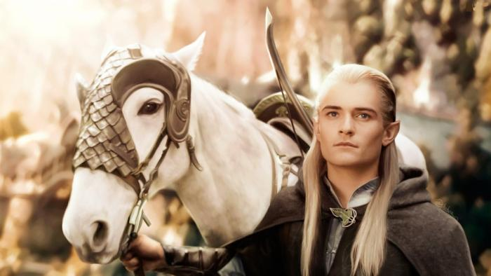

At Christmas, you probably see images of elves everywhere, but do you know the history of elves? The idea of elves we have today comes from Norse mythology. The elves in Norse mythology were called the Álfar and were believed to cause illness, have strong magic, and be very beautiful. Elves were very popular in English fiction after the medieval period, where they were often considered to be a type of fairy and often seen as mischievous pranksters.
The biggest influence on the way elves are shown in today's books and movies is The Lord of the Rings by J.R.R. Tolkien. Tolkien wrote these books around 1950, and he described elves as brave, graceful creatures who were very wise. He also made it clear they were not the old "fairytale" elves, they were human-sized and didn't have wings.
Christmas elves as we know them were not seen until the mid-1800s. They were first shown in the 1823 poem "A Visit from Saint Nicholas" (you probably know it as "'Twas the Night Before Christmas"). In the poem, Santa is described as "a right jolly old elf" and one of the early illustrators for the poem, Thomas Nast, showed Santa's helpers as small elves. Now it's pretty much impossible to imagine Santa working in his toyshop without a team of tiny elves helping him!
FactsElf
